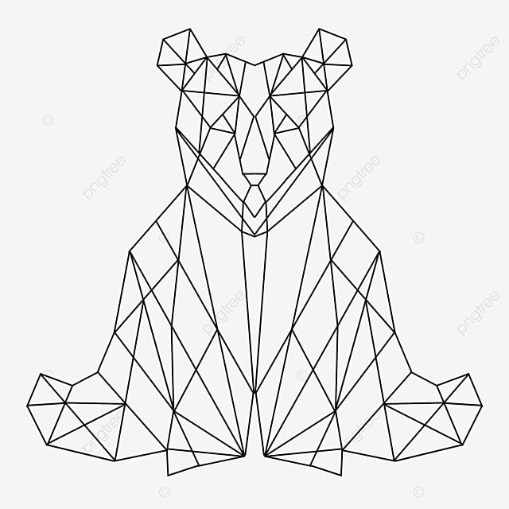
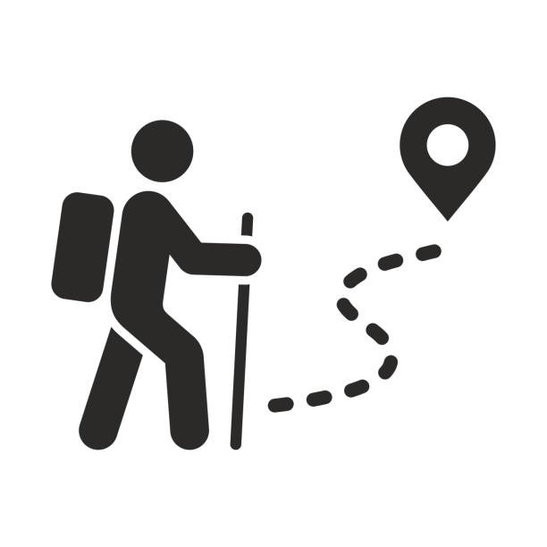
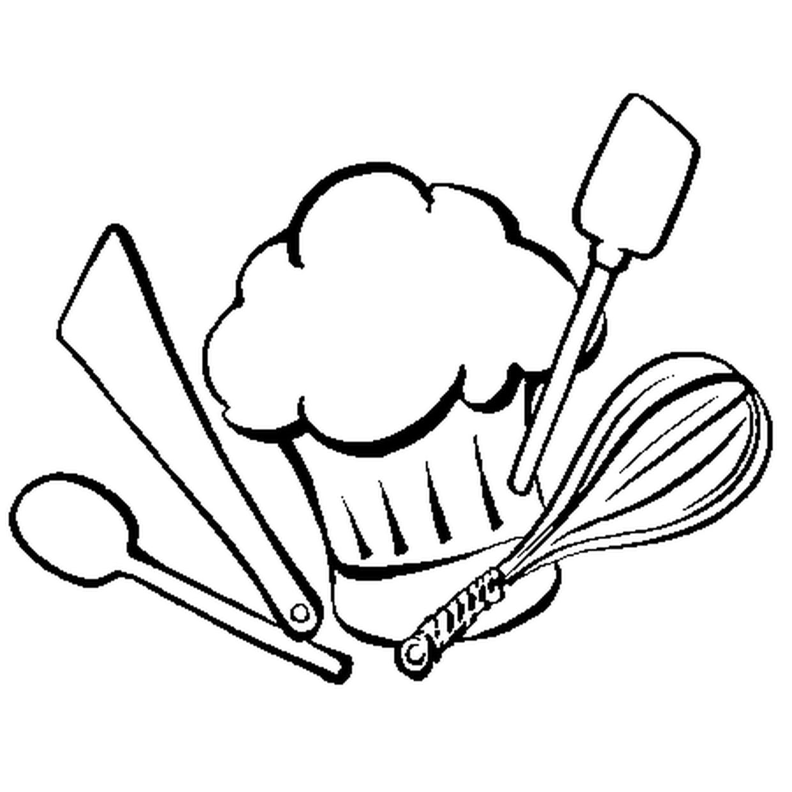

À propos de moi
Je m’appelle Maximilien, j’ai 22 ans,
je suis actuellement en bachelor afin de valider mon diplôme d’auxiliaire de service vétérinaire !
J’ai grandi à Douai dans le Nord-Pas-de-Calais
où j’ai eu une enfance heureuse entourée de ma mère, de ma sœur ainsi que de plusieurs chats.
À mon arrivée sur la région Bordelaise ma mère a décidé d’adopter un chien, un cocker spaniel noir et feu qui se nomme Ioban.
Plus tard, avant d’emménager à Bordeaux j’ai recueilli un chaton trouvé au fin fond de mon garage, un européen que j’ai renommé Maca et qui sera mon chat.
Mes compétences
Je suis quelqu’un de travailleur, je fournis des efforts afin de m’améliorer quotidiennement, je suis par ailleurs une personne autonome.
Mes passions
-
-Les animaux
 -
-La randonnée
 -
-La cuisine
